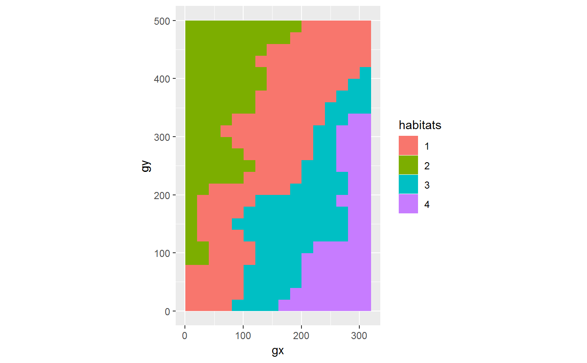

R/tt_test.R
tt_test.RdDetermine habitat-species associations with code developed by Sabrina Russo, Daniel Zuleta, Matteo Detto, and Kyle Harms.
tt_test(census, sp, habitat, plotdim = NULL, gridsize = NULL)
| census | A dataframe; a ForestGEO tree table (see details). |
|---|---|
| sp | Character sting giving any number of species-names. |
| habitat | Object giving the habitat designation for each
plot partition defined by |
| plotdim | Plot dimensions. |
| gridsize | Grid size. |
A list of matrices. You can summarize the output with summary() and
convert it to a dataframe with fgeo.tool::to_df(). See examples.
You should only try to determine the habitat association for sufficiently abundant species - in a 50-ha plot, a minimum abundance of 50 trees/species has been used.
This test should use individual trees not the (potentially multiple) stems of individual trees. This test only makes sense at the population level. We are interested in knowing whether or not individuals of a species are aggregated on a habitat. Multiple stems of an individual do not represent population level processes but individual level processes.
Nestor Engone Obiang, David Kenfack, Jennifer Baltzer, and Rutuja Chitra-Tarak provided feedback. Daniel Zuleta provided guidance.
N.Hab.1: Count of stems of the focal species in habitat 1.
Gr.Hab.1: Count of instances the observed relative density of the focal
species on habitat 1 was greater than the relative density based on the TT
habitat map.
Ls.Hab.1: Count of instances the observed relative density of the focal
species on habitat 1 was less than the relative density based on the TT
habitat map.
Eq.Hab.1: Count of instances the observed relative density of the focal
species on habitat 1 was equal to the relative density based on the TT
habitat map.
The sum of the Gr.Hab.x, Ls.Hab.x, and Eq.Hab.x columns for one habitat
equals the number of 20 x20 quads in the plot.
The Rep.Agg.Neut columns for each habitat indicate whether the species is
significantly repelled (-1), aggregated (1), or neutrally distributed (0) on
the habitat in question.
The probabilities associated with the test for whether these patterns are
statistically significant are in the Obs.Quantile columns for each habitat.
Note that to calculate the probability for repelled, it is the value given,
but to calculate the probability for aggregated, it is 1- the value given.
fgeo.tool::to_df(), fgeo.tool::fgeo_habitat().
library(dplyr)#> #>#> #> #>#> #> #>library(fgeo.tool) library(fgeo.map)#> Warning: S3 method 'plot.tt_df' was declared in NAMESPACE but not found# Pick alive trees, of 10 mm or more census <- luquillo_top3_sp census <- filter(census, status == "A", dbh >= 10) # Pick sufficiently abundant species pick <- filter(add_count(census, sp), n > 50) species <- unique(pick$sp) # Use your habitat data or create if from elevation data habitat <- fgeo_habitat(luquillo_elevation, gridsize = 20, n = 4) plot(habitat)# A list or matrices tt_lst <- tt_test(census, species, habitat)#>#>tt_lst#> [[1]] #> N.Hab.1 Gr.Hab.1 Ls.Hab.1 Eq.Hab.1 Rep.Agg.Neut.1 Obs.Quantile.1 N.Hab.2 #> CASARB 23 360 1239 1 0 0.225 24 #> Gr.Hab.2 Ls.Hab.2 Eq.Hab.2 Rep.Agg.Neut.2 Obs.Quantile.2 N.Hab.3 #> CASARB 1544 49 7 0 0.965 6 #> Gr.Hab.3 Ls.Hab.3 Eq.Hab.3 Rep.Agg.Neut.3 Obs.Quantile.3 N.Hab.4 #> CASARB 152 1441 7 0 0.095 13 #> Gr.Hab.4 Ls.Hab.4 Eq.Hab.4 Rep.Agg.Neut.4 Obs.Quantile.4 #> CASARB 1246 352 2 0 0.77875 #> #> [[2]] #> N.Hab.1 Gr.Hab.1 Ls.Hab.1 Eq.Hab.1 Rep.Agg.Neut.1 Obs.Quantile.1 N.Hab.2 #> PREMON 109 1407 192 1 0 0.879375 53 #> Gr.Hab.2 Ls.Hab.2 Eq.Hab.2 Rep.Agg.Neut.2 Obs.Quantile.2 N.Hab.3 #> PREMON 392 1204 4 0 0.245 42 #> Gr.Hab.3 Ls.Hab.3 Eq.Hab.3 Rep.Agg.Neut.3 Obs.Quantile.3 N.Hab.4 #> PREMON 1005 589 6 0 0.628125 30 #> Gr.Hab.4 Ls.Hab.4 Eq.Hab.4 Rep.Agg.Neut.4 Obs.Quantile.4 #> PREMON 139 1457 4 0 0.086875 #> #> [[3]] #> N.Hab.1 Gr.Hab.1 Ls.Hab.1 Eq.Hab.1 Rep.Agg.Neut.1 Obs.Quantile.1 N.Hab.2 #> SLOBER 27 677 919 4 0 0.423125 11 #> Gr.Hab.2 Ls.Hab.2 Eq.Hab.2 Rep.Agg.Neut.2 Obs.Quantile.2 N.Hab.3 #> SLOBER 368 1213 19 0 0.23 16 #> Gr.Hab.3 Ls.Hab.3 Eq.Hab.3 Rep.Agg.Neut.3 Obs.Quantile.3 N.Hab.4 #> SLOBER 1254 322 24 0 0.78375 12 #> Gr.Hab.4 Ls.Hab.4 Eq.Hab.4 Rep.Agg.Neut.4 Obs.Quantile.4 #> SLOBER 1086 507 7 0 0.67875 #> #> attr(,"class") #> [1] "tt_lst" "list"# A simple summary to help you interpret the results summary(tt_lst)#> Species Habitat_1 Habitat_2 Habitat_3 Habitat_4 #> 1 CASARB neutral neutral neutral neutral #> 2 PREMON neutral neutral neutral neutral #> 3 SLOBER neutral neutral neutral neutral# A combined matrix Reduce(rbind, tt_lst)#> N.Hab.1 Gr.Hab.1 Ls.Hab.1 Eq.Hab.1 Rep.Agg.Neut.1 Obs.Quantile.1 N.Hab.2 #> CASARB 23 360 1239 1 0 0.225000 24 #> PREMON 109 1407 192 1 0 0.879375 53 #> SLOBER 27 677 919 4 0 0.423125 11 #> Gr.Hab.2 Ls.Hab.2 Eq.Hab.2 Rep.Agg.Neut.2 Obs.Quantile.2 N.Hab.3 #> CASARB 1544 49 7 0 0.965 6 #> PREMON 392 1204 4 0 0.245 42 #> SLOBER 368 1213 19 0 0.230 16 #> Gr.Hab.3 Ls.Hab.3 Eq.Hab.3 Rep.Agg.Neut.3 Obs.Quantile.3 N.Hab.4 #> CASARB 152 1441 7 0 0.095000 13 #> PREMON 1005 589 6 0 0.628125 30 #> SLOBER 1254 322 24 0 0.783750 12 #> Gr.Hab.4 Ls.Hab.4 Eq.Hab.4 Rep.Agg.Neut.4 Obs.Quantile.4 #> CASARB 1246 352 2 0 0.778750 #> PREMON 139 1457 4 0 0.086875 #> SLOBER 1086 507 7 0 0.678750#> # A tibble: 12 x 8 #> habitat sp distribution stem_count Eq.Hab Gr.Hab Ls.Hab Obs.Quantile #> * <chr> <chr> <chr> <dbl> <dbl> <dbl> <dbl> <dbl> #> 1 1 CASARB neutral 23 1 360 1239 0.225 #> 2 1 PREMON neutral 109 1 1407 192 0.879 #> 3 1 SLOBER neutral 27 4 677 919 0.423 #> 4 2 CASARB neutral 24 7 1544 49 0.965 #> 5 2 PREMON neutral 53 4 392 1204 0.245 #> 6 2 SLOBER neutral 11 19 368 1213 0.23 #> 7 3 CASARB neutral 6 7 152 1441 0.095 #> 8 3 PREMON neutral 42 6 1005 589 0.628 #> 9 3 SLOBER neutral 16 24 1254 322 0.784 #> 10 4 CASARB neutral 13 2 1246 352 0.779 #> 11 4 PREMON neutral 30 4 139 1457 0.0869 #> 12 4 SLOBER neutral 12 7 1086 507 0.679